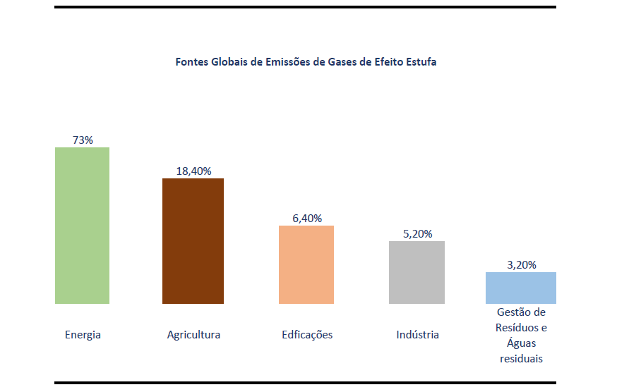

O que é a crise climática?
A crise climática é uma emergência global causada pelo aumento de gases de efeito estufa na atmosfera. Isso resulta em mudanças perigosas no clima, como temperaturas extremas, elevação do nível do mar e desastres naturais mais frequentes.
Como ela acontece
Os gases de efeito estufa, como dióxido de carbono (CO₂), metano (CH₄) e óxido nitroso (N₂O), são essenciais para manter a temperatura da Terra adequada à vida. No entanto, a atividade humana tem aumentado drasticamente a concentração desses gases na atmosfera, criando um desequilíbrio.
Atividades humanas que intensificam a crise climática:
- Queima de Combustíveis Fósseis
- Desmatamento
- Pecuária e Agricultura Intensiva
- Produção Industrial
- Gestão de Resíduos
- Consumo Excessivo e Extração de Recursos
Essas atividades não só contribuem diretamente para o aumento das emissões, mas também afetam ecossistemas essenciais que ajudam a regular o clima.
